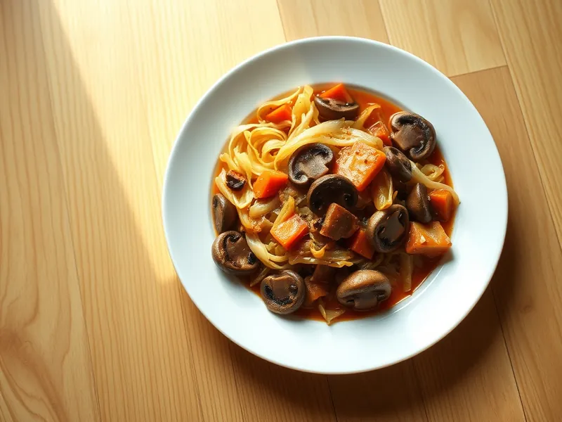

Капустная солянка с грибами на сковороде
Квашеная и свежая капуста, тушённые с жареными грибами и томатом, кисло-сладкие
30 мин3 порц.263 ккал на порциюБ 9 · Ж 16 · У 20Русская кухня
Открыть в приложении: порции, таймеры, список покупок
Продукты на 3 порц.
- Квашеная капуста300 г
- Капуста белокочанная300 г
- Шампиньоны300 г
- Лук репчатый1 шт
- Морковь1 шт
- Томатная паста2 ст. л.
- Сахар2 ч. л.
- Вода100 мл
- Растительное масло3 ст. л.
- Лавровый лист1 шт
- Перец чёрный молотый1 щеп.
Как готовить
- Квашеную капусту отожмите от рассола, свежую тонко нашинкуйте. Грибы нарежьте пластинами, лук кубиком, морковь натрите. На это уйдёт 7 минут.
- Разогрейте 2 столовые ложки масла на сильном огне и обжарьте грибы 6 минут до румяности. Переложите в миску.
- В оставшемся масле на среднем огне обжарьте лук и морковь 4 минуты, добавьте обе капусты и жарьте 5 минут, помешивая.
- Добавьте томатную пасту, сахар, воду, лавровый лист и перец, перемешайте и тушите под крышкой на слабом огне 8 минут, пока свежая капуста не станет мягкой.
- Верните грибы, перемешайте и прогрейте 2 минуты. Попробуйте и при необходимости посолите.
Совет. Квашеная капуста уже солёная, поэтому солите только в самом конце. Если она очень кислая, промойте её холодной водой.